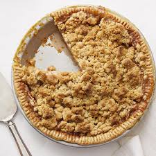

Maa's Delicious Apple Crumble

Di best Apple Pie in the Universe
Ingredients
For the filling
- 575g Bramley apple (3 medium apples), peeled, cored and sliced to 1cm thick
- 2 tbsp golden caster sugar
For the crumble
- 175g plain flour
- 110g golden caster sugar
- 110g cold butter
For the topping (optional)
- 1 tbsp rolled oats
- 1 tbsp demerara sugar
- double cream, clotted cream or custard, to serve
Instructions
- Heat the oven to 190C/170 fan/gas 5.
- Toss 575g peeled, cored and sliced Bramley apples with 2 tbsp golden caster sugar and put in a 23cm round baking dish.
- Put 175g plain flour and 110g golden caster sugar in a bowl with a good pinch of salt.
- Slice in 110g cold butter and rub it in with your fingertips until the mixture looks like moist breadcrumbs.
- Pour the crumb mix over the apples to form a pile in the centre, then use a fork to even out.
- Gently press the surface with the back of the fork so the crumble holds together and goes crisp, then lightly drag the fork over the top for a decorative finish.
- Sprinkle 1 tbsp rolled oats and 1 tbsp demerara sugar over evenly, if you wish.
- Set on a baking tray and put in the preheated oven for 35-40 minutes, until the top is golden and the apples feel very soft when you insert a small, sharp knife. Leave to cool for 10 minutes before serving.
- Make a sincere offering to Lord Krishna, present a sample of maa's bbc apple crumble, coated with double cream for His pleasure
- Serve Di Apple Crumble to your relatives,friends, guests! and max out!